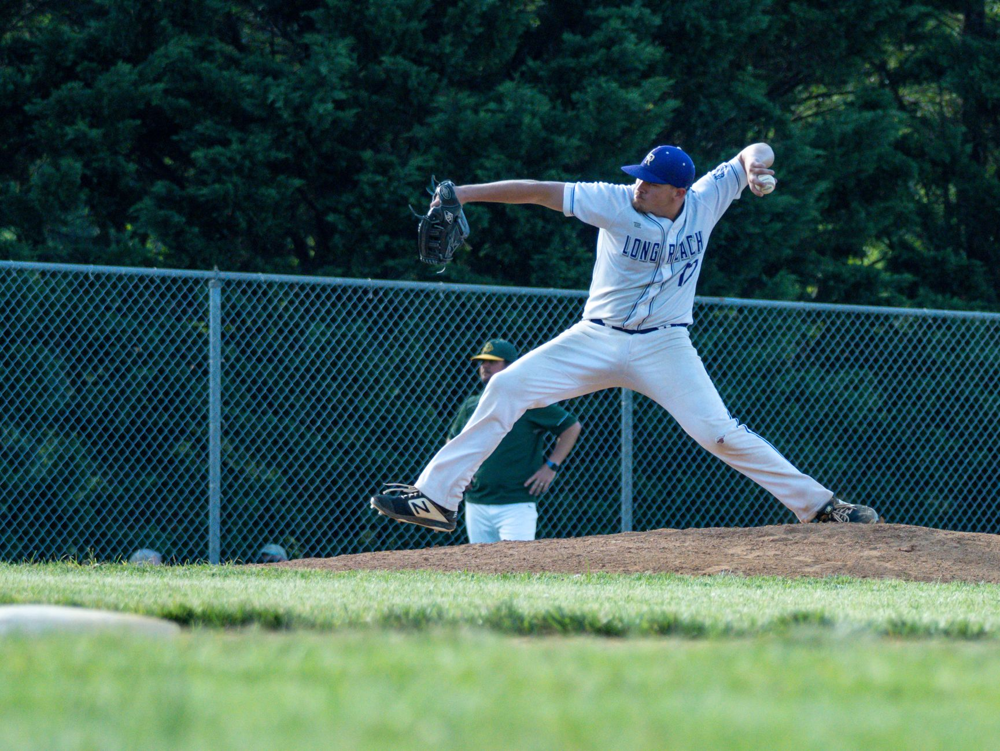

The importance of a solid foundation
Many young athletes believe that pitching is all about arm strength. While a powerful arm is helpful, it is actually the least important part of a successful delivery. Effective pitching is a full-body movement that starts from the ground up. If your mechanics are flawed, you will struggle with consistency and, more importantly, you will put unnecessary stress on your elbow and shoulder.
By focusing on baseball pitching mechanics fundamentals, you learn how to transfer energy from your legs through your core and finally into the ball. This kinetic chain allows you to throw harder with less effort. When your body moves as a single, synchronized unit, your accuracy improves because your release point becomes more repeatable.
Efficiency in pitching is not about how hard you throw with your arm, but how well you move your entire body toward the target.
The windup and leg lift phase
The pitching motion begins with the windup or the stretch. The goal of this initial phase is to build potential energy. As you begin your movement, you must establish a stable base. Your feet should be shoulder-width apart, providing a solid platform to push off from. A common mistake is being too narrow, which leads to instability during the drive phase.
During the leg lift, focus on your balance. If you wobble or lose your footing, the rest of your delivery will be compromised. Think of your leg lift as loading a spring; the more controlled the lift, the more explosive your drive will be when you eventually push off the mound.
Driving off the mound and stride
Once your leg is lifted, it is time to generate power. This happens during the drive phase, where you push off the pitcher's rubber with your back leg. This movement should be driving toward home plate, not just upward. A strong drive uses the large muscles in your glutes and thighs to propel your body forward.
As you stride toward the plate, your lead leg should extend toward the target. This stride creates the distance needed to generate momentum. It is vital to keep your stride length consistent. If you stride too far, you lose control; if you stride too short, you lose power. Finding that 'sweet spot' is essential for elite performance.
Arm cocking and deceleration
As your lead foot hits the ground, your arm enters the cocking phase. This is where the energy generated from your legs is transferred to your torso and then to your arm. Your elbow should be at or slightly above shoulder level to protect the joint. A common error is 'dropping the elbow,' which significantly increases the risk of ulnar collateral ligament (UCL) injuries.
The release of the ball occurs at the peak of this motion. After the ball leaves your hand, you enter the deceleration phase. You cannot simply stop your arm abruptly. Instead, your body must follow through naturally. A smooth follow-through allows the energy to dissipate safely through your entire body, preventing the arm from 'snapping' at the end of the motion.
Training tips for better mechanics
To improve your pitching, you must practice with intention. Do not just throw balls; focus on the specific mechanics you are trying to fix. Drills are your best friend in this process. Using weighted balls, performing balance drills, and doing long-toss sessions can all contribute to a more robust delivery.
Consistency is the most important factor. Mechanics are built through repetition. Make sure you are warming up properly before every session to prepare your muscles and joints for the intense movements required in pitching.
Putting it all together
Mastering baseball pitching mechanics fundamentals is a journey that takes time, patience, and discipline. By focusing on your balance, your drive, and your follow-through, you will become a more effective and durable player. Remember that every great pitcher started exactly where you are, working on these very same movements.
If you are new to the sport and want to understand the broader context of how a game is played, we highly recommend reading our Baseball Rules Explained: A Beginner's Guide to the Game at https://dhyey.bond/blog/baseball-rules-explained-a-beginner-s-guide-to-the-game/. Understanding the rules will help you see how your pitching performance impacts the flow of the entire game.
See Also
If you enjoyed this Baseball Guide article, check out Baseball Rules Explained: A Beginner's Guide to the Game for more useful reading.